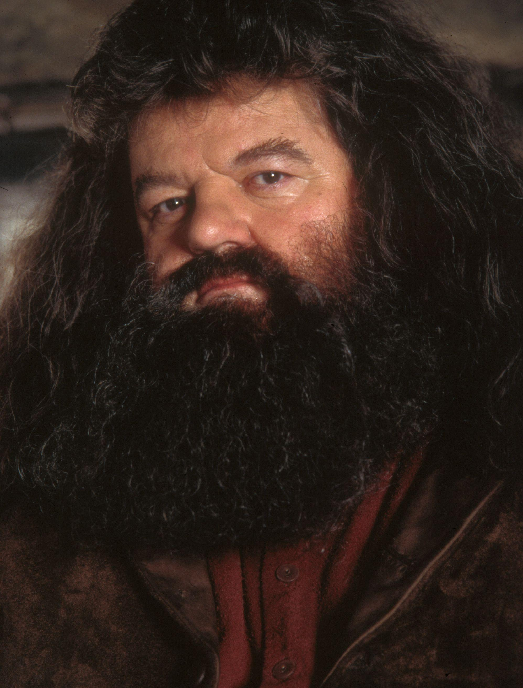
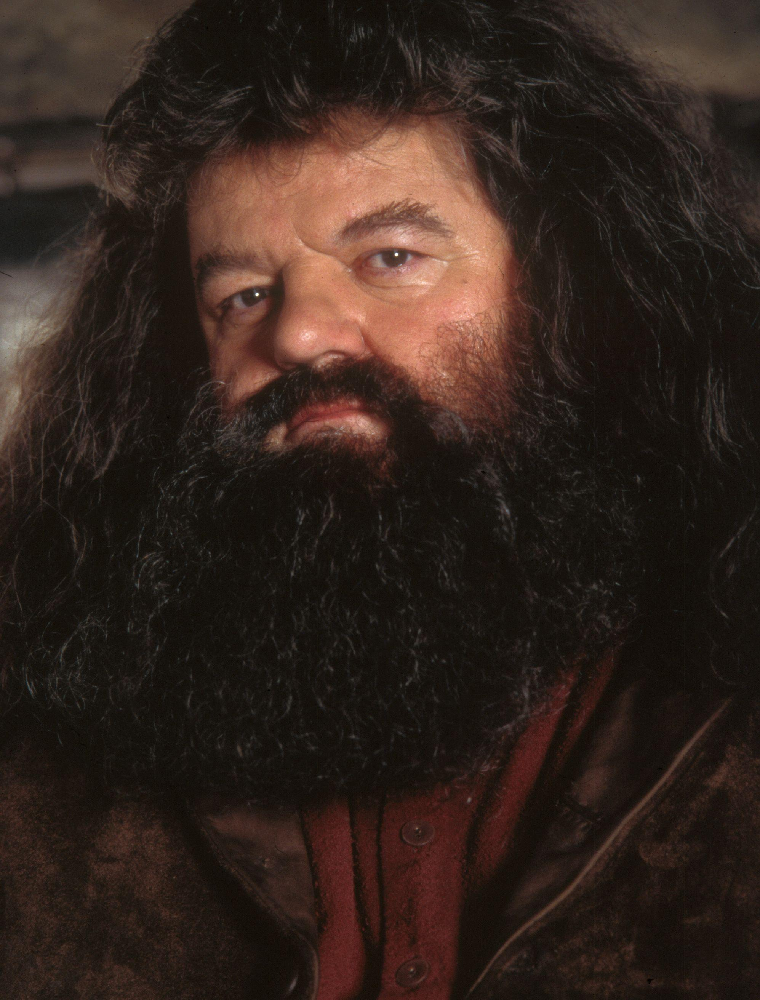

Harry James Potter is the main character in J. K. Rowling's Harry Potter fantasy series. The books cover seven years in the life of the orphan who, on his 11th birthday, learns he is a wizard and the son of magical parents Lily and James Potter. He goes to Hogwarts School of Witchcraft and Wizardry to learn magic.


Here is my First Movie - Harry Potter And The Sorcerer's Stone - Reviews
Click on the Pictures to view My Favourite Character's
 

Quidditch is a flying game played in Hogwarts. In Quidditch, each team is made up of 7 players. One Seeker, one Keeper, two Beaters and three Chasers – each of which have a specific task. The Chasers are there to try and keep possession of the Quaffle and to score a goal by throwing it through one of the opponent's three hoops.
Rules :
1) The Chasers are there to try and keep possession of the Quaffle and to score a goal by throwing it through one of the opponent’s three hoops. They can pass the ball between each other but only one is allowed to enter into the scoring zone at any one time.
2) The two Beaters throw Bludgers and these are thrown at the opposition to disrupt them. The other side’s Beaters, in turn, throw them back with the same intention. The players in this position are usually the strongest and most physical within the team.
3) The Keeper is a defensive player and is tasked with defending the team’s hoops
4) Lastly, the Seeker is the team member whose job is to capture the all-important Golden Snitch.